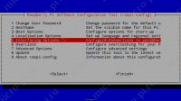
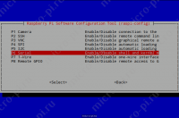
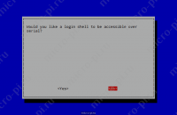
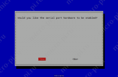
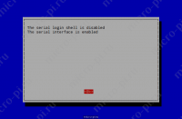

Настройка UART
Репозиторий WirinPi(зеркало)
https://github.com/WiringPi/WiringPi
Настройка Serial Port
Настройка UART на Raspberry Pi По умолчанию последовательный порт на Raspberry Pi настроен как консольный порт для связи с ОС Linux. Если вы хотите использовать этот последовательный порт, вы должны отключить ОС от использования этого порта.
В Raspberry Pi введите следующую команду в окне терминала, чтобы включить UART и отключить консоль на последовательный порт,
sudo raspi-config
- Выберите «Interfacing Options»

- После «Interfacing Options» выберите «Serial», чтобы включить UART

- Затем выберите «No», чтобы отключить консоль на последовательный порт

- В конце попросит включить аппаратный последовательный порт, выберите «Да»

- Всё, UART включен, консоль отключена

UART и дерево устройств
Различные определения оверлея в дереве устройств UART можно найти в дереве ядра GitHub . Два самых полезных оверлея - это disable-bt и miniuart-bt.
disable-bt отключает устройство Bluetooth и делает первый PL011 (UART0) основным UART. Вы также должны отключить системную службу, которая инициализирует модем, чтобы он не подключался к UART, используя
sudo systemctl disable hciuart.
miniuart-bt переключает функцию Bluetooth на использование мини-UART и делает первый PL011 (UART0) первичным UART. Обратите внимание, что это может снизить максимально используемую скорость передачи данных (см. Ограничения мини-UART ниже). Вы также должны установить тактовую частоту ядра VPU на фиксированную частоту с помощью force_turbo=1 или core_freq=250.
В таких надписях uart2, uart3, uart4 и uart5 используются для того, чтобы четыре дополнительных UARTs на Pi 4. Существует и другие UART-специфические накладки в папке. См. /boot/overlays/README Подробные сведения о наложениях дерева устройств или запустите dtoverlay -h overlay-name для получения описаний и информации об использовании.
Полные инструкции по использованию наложений дерева устройств см. На этой странице . Вкратце, добавьте строку в config. файл, чтобы применить наложение дерева устройств. Обратите внимание, что -overlay.dts часть имени файла удалена. Например:
dtoverlay=disable-bt